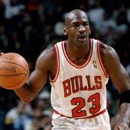
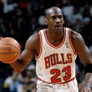
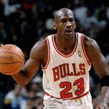

Nel corso della sua storia, l’NBA ha regalato al mondo campioni straordinari, atleti in grado di dominare sul parquet e di lasciare il segno con il loro talento. Ma le leggende appartengono a un’altra dimensione. Non sono semplici giocatori, sono figure quasi regali: monarchi affamati che hanno consacrato la loro vita, e spesso qualcosa di più, a questo sport. Le loro imprese non si misurano soltanto in punti segnati o titoli vinti, ma nel modo in cui hanno cambiato il gioco, ispirato generazioni e inciso il proprio nome nella storia. Parlare delle leggende NBA significa entrare in un racconto che va oltre le statistiche: è un viaggio tra icone eterne, custodi di un’eredità che continua ancora oggi a far sognare milioni di appassionati. Qui sono raccolte le storie di 20 leggende che non sono famose grazie al basket, ma grazie alle quali il basket è famoso.
